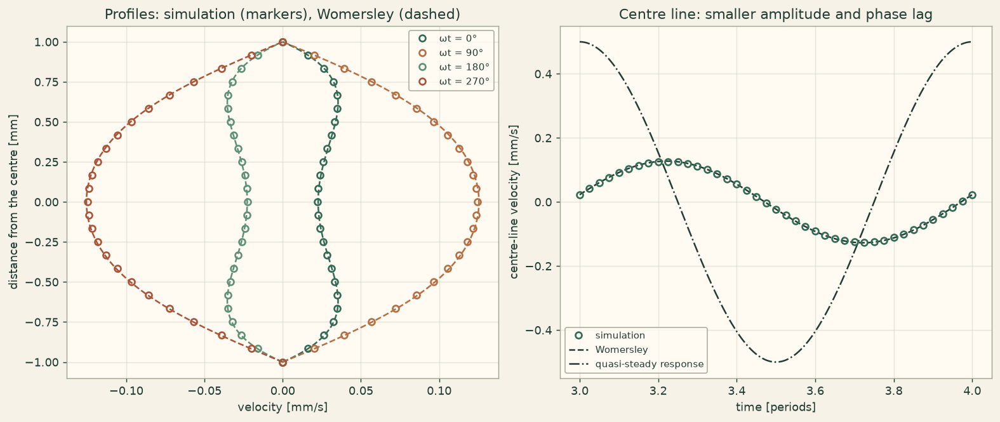
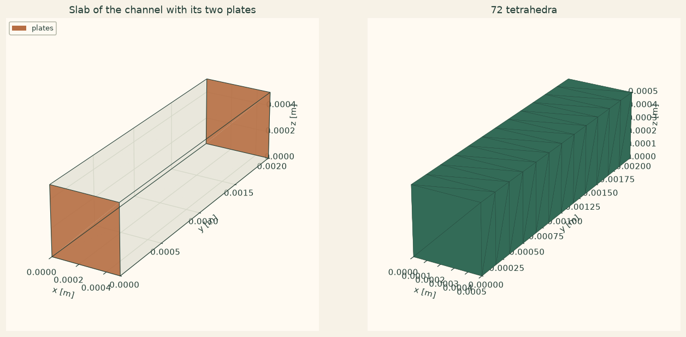

Docs › Examples › Womersley pulsatile flow
Fluid flow · 3D
Womersley pulsatile flow
Oscillatory pressure-driven flow between plates at Womersley number 3, graded against the analytic Womersley profile.
Run locally with OneSimulation. The example downloads are free. Running them requires an activated runtime. Runtime Alpha 0.2.1a7 · CPython 3.13 on macOS (Apple Silicon), Ubuntu 22.04 (x86-64), and Windows x64. Installation and activation · View pilot plans. Scope of the reference checks.

What it computes
OneSimulation integrates the transient incompressible Navier-Stokes equations with an oscillating body force until the periodic state is reached. The geometry is read from a STEP file with named faces; the script that builds it comes with the notebook.
What it checks
Profiles at four phases agree within about 0.9 %, the centreline amplitude within about 0.9 % and the phase lag within 0.1 degree of the Womersley solution.
Geometry
The notebook starts at the import of the CAD file womersley_pulsatile_flow.step: STEP (AP242), readable by any CAD program, with the names of the faces that the boundary conditions use. Put it next to the notebook.

The geometry script
The script womersley_pulsatile_flow_geometry.py builds the geometry with the CAD objects of OneSimulation and writes the file. Change a dimension there, run it, and run the notebook again.
"""Geometry of the OneSimulation example "Womersley pulsatile flow between parallel plates".
Builds a thin slab of the channel, 0.5 mm long and wide, with a gap of 2 mm between the plates,
with the CAD objects of OneSimulation and writes womersley_pulsatile_flow.step. The plates are the
faces y_min and y_max; the faces keep their names x_min, x_max, y_min, y_max, z_min and z_max in
the file.
"""
from onesim.cad.d3 import Box
channel = Box(length=0.0005, width=0.002, height=0.0005)
channel.save("womersley_pulsatile_flow.step")The notebook
The complete notebook, cell by cell. Run it to produce the figures and the comparison printout.
A viscous fluid fills the gap between two fixed plates a distance \(2h\) apart. A pressure gradient that oscillates in time, \(-\partial p/\partial x = G\cos\omega t\), drives the flow \(u(y,t)\):
The channel comes from the CAD file womersley_pulsatile_flow.step, a thin slab between the plates y_min and y_max. The script womersley_pulsatile_flow_geometry.py builds it with the CAD objects of OneSimulation.
Reference. The periodic state is the Womersley solution \(u=\operatorname{Re}\{U(y)\,e^{i\omega t}\}\),
It is governed by the Womersley number \(\alpha=h\sqrt{\omega/\nu}\). For small \(\alpha\) the profile is a parabola in phase with the forcing. For \(\alpha=3\), as here, the core is flattened and lags the pressure gradient, while the layers near the walls respond first.
import numpy as np
from onesim.cad.exchange import load
from onesim.materials import NewtonianFluid
from onesim.meshing import PeriodicPair, StructuredTetrahedralMesher
from onesim.numerics import Numerics
from onesim.numerics.fem import FiniteElement, TaylorHood
from onesim.numerics.linear import SparseDirect
from onesim.numerics.nonlinear import Newton
from onesim.numerics.time import BDF, BackwardEuler
from onesim.physics.hydrodynamics import IncompressibleNavierStokes, NoSlipWall
from onesim.simulation import PeriodicBoundary, Problem, Simulation
from onesim.simulation.field_constraints import MeanValue
from onesim.simulation.initial_conditions import InitialValue
from onesim.visualization import plots, theme
theme.set()Geometry and mesh
The slab is periodic along the flow and across the span; the mesher joins the opposite faces.
channel = load("womersley_pulsatile_flow.step")
faces = channel.boundaries
length, gap, span = channel.size
half_gap = gap / 2
along, across = PeriodicPair(faces.x_min, faces.x_max), PeriodicPair(
faces.z_min, faces.z_max
)
mesh = StructuredTetrahedralMesher(
cells=(1, 12, 1), periodic_pairs=(along, across)
).generate(channel)
fig = plots.figure(1, 2, size=(12, 5.5))
plots.geometry(
channel,
selection={"plates": faces.y_min | faces.y_max},
labels=False,
title="Slab of the channel with its two plates",
ax=fig[0],
)
plots.mesh(
mesh,
groups=("all",),
legend=False,
title=f"{mesh.cell_count} tetrahedra",
ax=fig[1],
)
plots.show()Model
The pressure gradient acts as a body force. Taylor-Hood elements in space and the second-order BDF method with 40 steps per period in time; the flow starts from rest.
forcing, womersley_number = 1.0, 3.0
water = NewtonianFluid(density=1000.0, dynamic_viscosity=1.0e-3)
viscosity = water.dynamic_viscosity / water.density
omega = (womersley_number / half_gap) ** 2 * viscosity
period = 2 * np.pi / omega
def womersley(y, t):
"""Velocity of the Womersley solution at the distance y from the channel centre."""
k = np.sqrt(1j * omega / viscosity)
return np.real(
forcing
/ (1j * water.density * omega)
* (1 - np.cosh(k * y) / np.cosh(k * half_gap))
* np.exp(1j * omega * t)
)
model = IncompressibleNavierStokes(
domain=channel.volume,
material=water,
body_force=lambda x, t: np.column_stack(
(np.full_like(x, forcing * np.cos(omega * t)), 0 * x, 0 * x)
),
)
problem = Problem(
name="Womersley pulsatile channel flow",
geometry=channel,
physics=(model,),
boundary_conditions=(
NoSlipWall(boundary=faces.y_min | faces.y_max, physics=model),
PeriodicBoundary(pair=along, physics=model),
PeriodicBoundary(pair=across, physics=model),
),
constraints=(MeanValue(model.pressure, 0.0),),
initial_conditions=(InitialValue(model.velocity, (0.0, 0.0, 0.0)),),
)
numerics = Numerics(
spatial=FiniteElement(element=TaylorHood()),
time_integrator=BDF(order=2, startup=BackwardEuler()),
linear_solver=SparseDirect(),
nonlinear_solver=Newton(
linear_solver=SparseDirect(), absolute_tolerance=1e-12, relative_tolerance=0.0
),
)
result = Simulation(problem=problem, mesh=mesh, numerics=numerics).run(
start_time=0.0, end_time=4 * period, time_step=period / 40
)
velocity = result.field(model.velocity)Results
The velocity across the gap is recorded over the fourth period, when the start-up has died out.
y = np.linspace(-half_gap, half_gap, 25)
times, history = velocity.time_series(
np.column_stack(
(np.full_like(y, length / 2), y + half_gap, np.full_like(y, span / 2))
)
)
times, u = times[-41:], history[-41:, :, 0]
scale = np.abs(womersley(0.0, times)).max()
print("phase of the forcing largest deviation from the Womersley profile")
for step in (0, 10, 20, 30):
print(
f"{9 * step:14d}° {100 * np.abs(u[step] - womersley(y, times[step])).max() / scale:.2f} % of the centre-line amplitude"
)
print(
f"centre-line amplitude: simulation {1e3 * np.abs(u[:, 12]).max():.4f} mm/s, Womersley {1e3 * scale:.4f} mm/s, "
f"quasi-steady parabola {1e3 * forcing * half_gap**2 / (2 * water.dynamic_viscosity):.4f} mm/s"
)Figure
Velocity profiles at four phases of the forcing, and the centre-line velocity over one period against the Womersley solution and the quasi-steady response.
fine_y, fine_t = np.linspace(-half_gap, half_gap, 121), np.linspace(
times[0], times[-1], 200
)
phases = {f"ωt = {9 * step}°": step for step in (0, 10, 20, 30)}
fig = plots.figure(1, 2, size=(12, 5))
plots.line(
points={label: (1e3 * u[step], 1e3 * y) for label, step in phases.items()},
reference={
label: (1e3 * womersley(fine_y, times[step]), 1e3 * fine_y)
for label, step in phases.items()
},
xlabel="velocity [mm/s]",
ylabel="distance from the centre [mm]",
title="Profiles: simulation (markers), Womersley (dashed)",
ax=fig[0],
)
plots.line(
points={"simulation": (times / period, 1e3 * u[:, 12])},
reference={
"Womersley": (fine_t / period, 1e3 * womersley(0.0, fine_t)),
"quasi-steady response": (
fine_t / period,
1e3
* forcing
* half_gap**2
/ (2 * water.dynamic_viscosity)
* np.cos(omega * fine_t),
),
},
xlabel="time [periods]",
ylabel="centre-line velocity [mm/s]",
title="Centre line: smaller amplitude and phase lag",
ax=fig[1],
)
plots.show()Going further
Lower the Womersley number to 0.5 and the profile becomes a parabola in phase with the forcing; raise it to 10 and the core moves as a plug with thin Stokes layers at the walls. Change the gap in womersley_pulsatile_flow_geometry.py and write the STEP file again; the frequency follows from the Womersley number. A circular pipe gives the classical solution with Bessel functions.